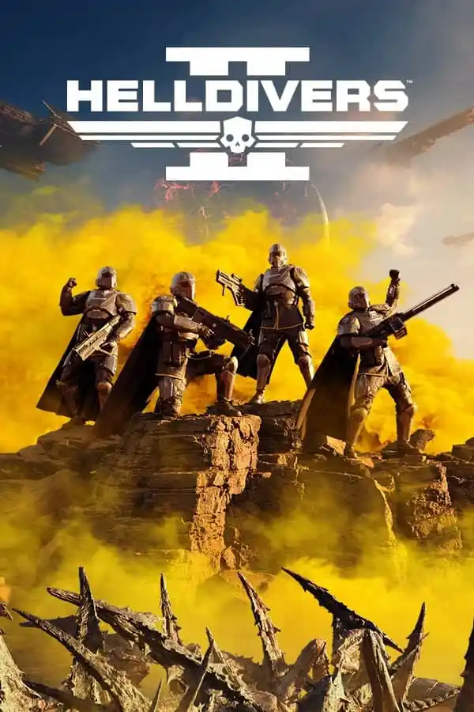

Résumé
Helldivers II est un jeu de tir coopératif à la troisième personne développé par Arrowhead Game Studios. Jusqu'à quatre joueurs défendent la Super Terre contre des hordes d'insectes et de robots, avec un tir allié toujours activé.